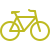

Estimated Time of Arrival: 5 minutes




John Doe
Rating: 4.8
Vehicle: Toyota Camry
License Plate: ABC123
Estimated Time of Arrival: 5 minutes
Rating: 4.8
Vehicle: Toyota Camry
License Plate: ABC123